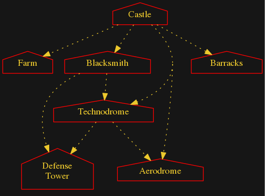

	<a href="index.html">GlestPack Techtree summary (home)</a> |
	<a href="/docs/">Game Help and Documentation</a>
<H4>Choose faction: &nbsp;<A HREF=egypt_overview.html>Egypt</a> |&nbsp;
&nbsp;<A HREF=greece_overview.html>Greece</a> |&nbsp;
&nbsp;<A HREF=indian_overview.html>Indian</a> |&nbsp;
&nbsp;<A HREF=magic_overview.html>Magic</a> |&nbsp;
&nbsp;<A HREF=natulka_overview.html>Natulka</a> |&nbsp;
&nbsp;<A HREF=norsemen_overview.html>Norsemen</a> |&nbsp;
&nbsp;<A HREF=persian_overview.html>Persian</a> |&nbsp;
&nbsp;<A HREF=romans_overview.html>Romans</a> |&nbsp;
&nbsp;<A HREF=tech_overview.html><I>Tech</I></a>
 </H4><P>
<P>
<H4>Techtree Diagrams: <a href="tech_techtree_clickable_map_buildings.html">Buildings</a> |
<a href="tech_techtree_clickable_map_buildings_units.html">Buildings Units</a> |
<a href="tech_techtree_clickable_map_all.html">All</a></H4>
<P>

<map id="test" name="test">
<area shape="poly" id="node1" href="tech_farm_full.html" title="Farm" alt="" coords="104,118,55,101,5,118,5,145,104,145"/>
<area shape="poly" id="node2" href="tech_blacksmith_full.html" title="Blacksmith" alt="" coords="297,118,212,101,127,118,127,145,296,145"/>
<area shape="poly" id="node4" href="tech_defense_tower_full.html" title="Defense\nTower" alt="" coords="184,324,113,293,42,324,42,373,184,373"/>
<area shape="poly" id="node5" href="tech_technodrome_full.html" title="Technodrome" alt="" coords="302,214,204,197,105,214,105,241,302,241"/>
<area shape="poly" id="node3" href="tech_aerodrome_full.html" title="Aerodrome" alt="" coords="401,330,316,314,231,330,231,357,400,357"/>
<area shape="poly" id="node6" href="tech_barracks_full.html" title="Barracks" alt="" coords="516,118,447,101,377,118,377,145,516,145"/>
<area shape="poly" id="node7" href="tech_castle_full.html" title="Castle" alt="" coords="329,22,276,5,222,22,222,49,329,49"/>
</map>
<h4>Arrow Styles:</h4>
<ul>
<li>Bold: Unit creates building
<li>Solid: Building produces unit or upgrade
<li>Dashed: Units morphs/upgrades to other unit
<li>Dotted: Unit or Upgrade is a requirement
</ul>